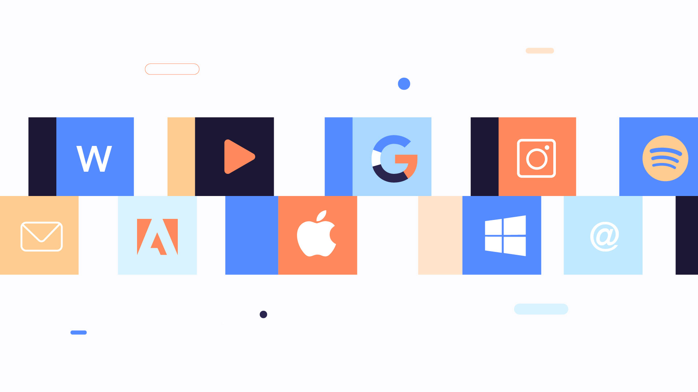
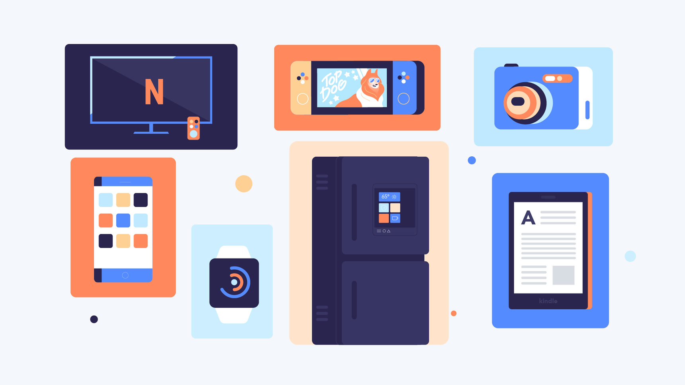

What is a Computer?
A computer is an electronic device that manipulates information, or data. It has the ability to store, retrieve, and process data. You may already know that you can use a computer to type documents, send email, play games, and browse the Web. You can also use it to edit or create spreadsheets, presentations, and even videos. Watch the video below to learn about different types of computers.

Hardware vs. Software
Before we talk about different types of computers, let's discuss two things all computers have in common: hardware and software.
Hardware is any part of your computer that has a physical structure, such as the keyboard or mouse. It also includes all of the computer's internal parts, which you can see in the image below.

Software is any set of instructions that tells the hardware what to do and how to do it. Examples of software include web browsers, games, and word processors.
Everything you do on your computer relies on both hardware and software. For example, you may be viewing this lesson in a web browser (software) and using your mouse (hardware) to click from page to page. As you learn about different types of computers, consider the differences in their hardware. Different types of computers also often use different types of software.
What are the Different Types of Computers?
When most people hear the word "computer," they think of a personal computer such as a desktop or laptop. However, computers come in many shapes and sizes, performing many different functions in our daily lives. When you withdraw cash from an ATM, scan groceries at the store, or use a calculator, you're using a type of computer.
Desktop Computers
Many people use desktop computers at work, home, and school. Desktop computers are designed to be placed on a desk, and they're typically made up of a few different parts, including the computer case, monitor, keyboard, and mouse.

Laptop Computers
Laptops are battery-powered computers that are more portable than desktops, allowing you to use them almost anywhere.

Tablet Computers
Tablet computers—or tablets—are handheld computers that are even more portable than laptops. Instead of a keyboard and mouse, tablets use a touch-sensitive screen for typing and navigation. The iPad is an example of a tablet.
Other Types of Computers
Many of today's electronics are specialized computers, though we don't always think of them that way. Here are a few common examples:
- Smartphones: Many cell phones can do a lot of things computers can do, including browsing the Internet and playing games. They are often called smartphones.
- Wearables: Wearable technology includes devices such as fitness trackers and smartwatches, designed to be worn throughout the day. These are often called wearables.
- Game Consoles: A game console is a specialized type of computer used for playing video games on your TV.
- TVs: Many TVs now include applications—or apps—that let you access various types of online content. For example, you can stream video from the Internet directly onto your TV.